各画像を生成ツールへアップロードし、下のプロンプトで編集。結果はこのフォルダへ
pilot_XX_gen.png（XXは番号）として保存 → pipeline/imagegen_pilot.py evaluate。
[JA] この航空写真を、写っている内容を一切変えずに高解像度化・鮮明化してください。 厳守事項: - 道路・白線・縁石・路面標示・建物・フェンスの位置と形状を1ピクセルも動かさない - 新しい物体・模様・文字・車両・影を追加しない/既存物を消さない - 構図・縮尺・回転を変えない（出力は入力と同じ範囲の正方形） - 色調・明るさは入力に厳密に合わせる（グレーディング済みのため変更不要） - 質感（アスファルトの粒、芝、砂利）のみを自然に精細化する 出力はできるだけ高解像度（2048px以上推奨）でお願いします。 [EN] Upscale and sharpen this aerial photo WITHOUT changing its content. Strict rules: do not move or reshape any road, line, curb, marking, building or fence by even one pixel; do not add or remove any object, pattern, text, vehicle or shadow; keep composition, scale and rotation identical (square output, same extent); match the input's colour and brightness exactly; only refine the natural textures (asphalt grain, grass, gravel). Highest possible resolution (2048px+) please.
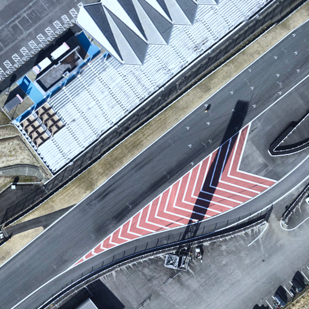
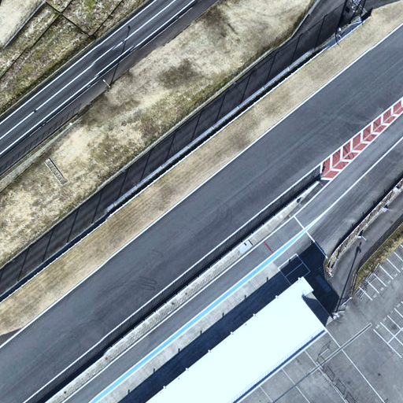
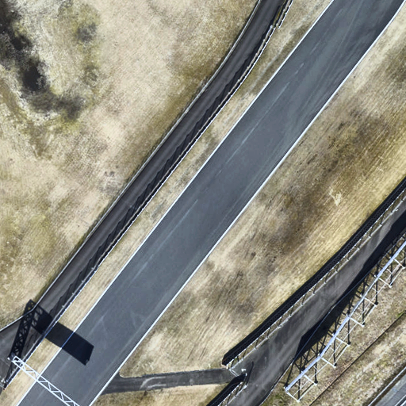
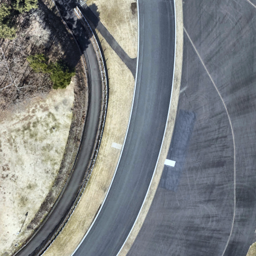
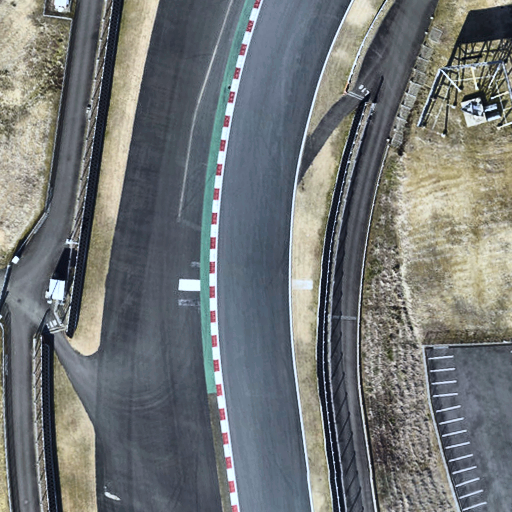
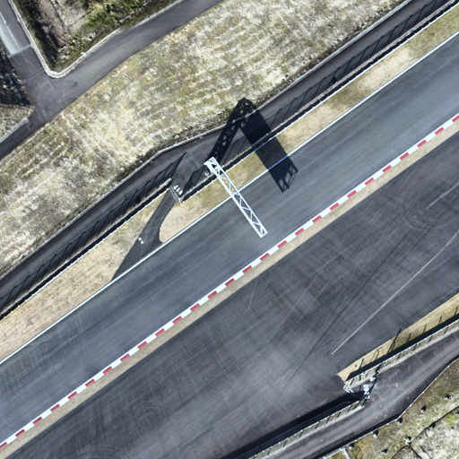
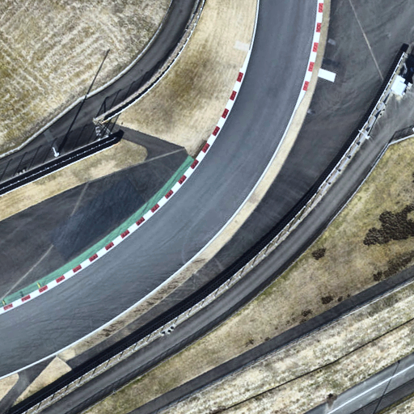
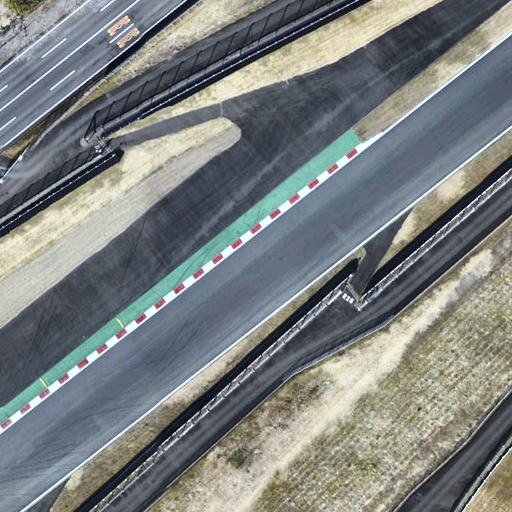
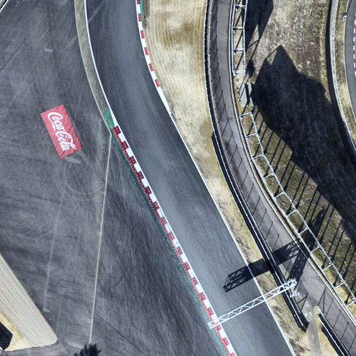
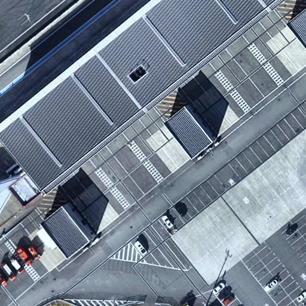
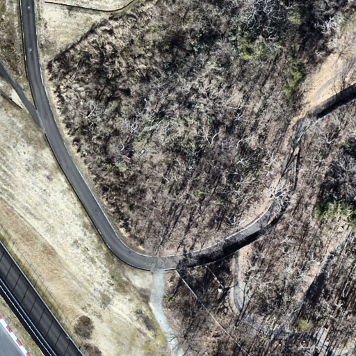
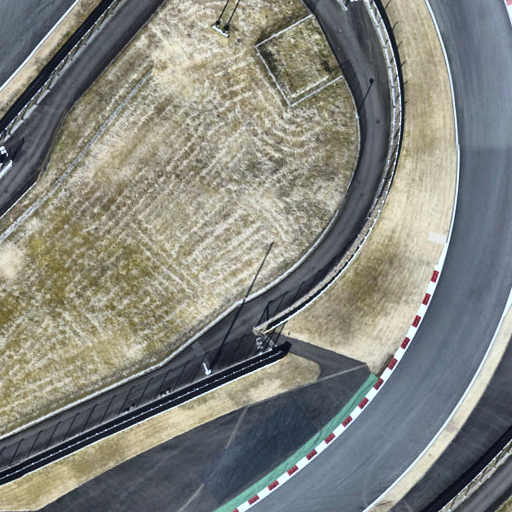